By Khoo An Xian
This project focuses on creating panoramas! In part A, we focus on computing homographies, using them to warp images, and compositing images together. To compute homographies, we will manually select point correspondences across 2 images. In part B, we will focus on automatic feature matching and use a RANSAC algorithm to compute homographies.The following pictures were taken by fixing the center of projection (COP) and rotating the camera. They feature (1) my living room, (2) my hike at Yellowstone, and (3) Wheeler Auditorium. They will each be stitched into a panorama!
| 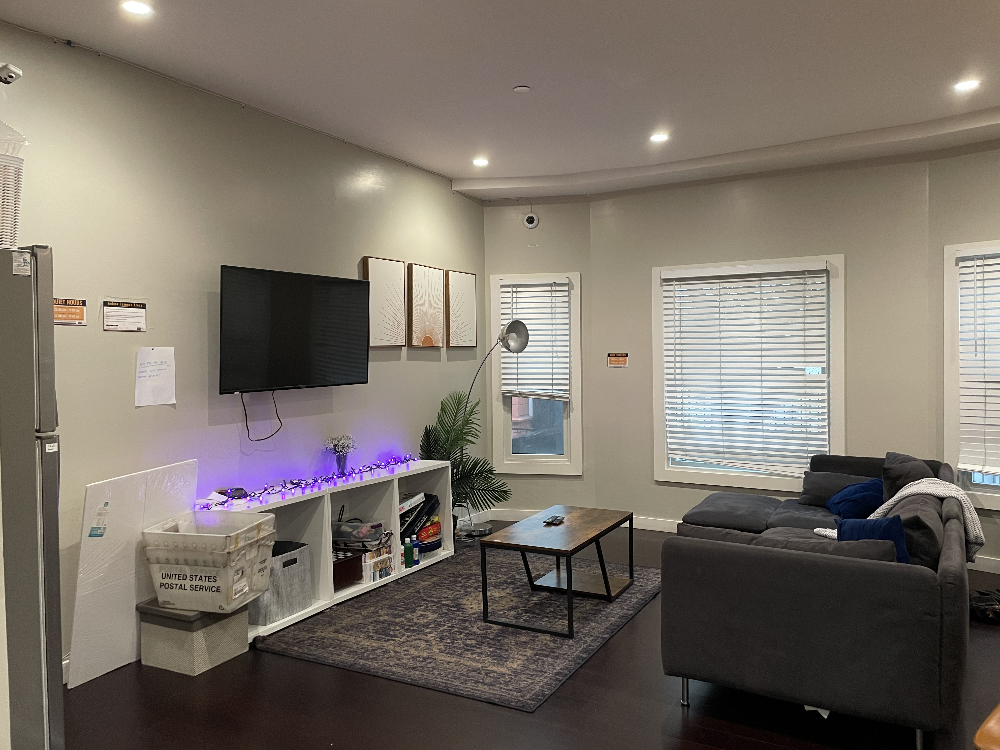 | 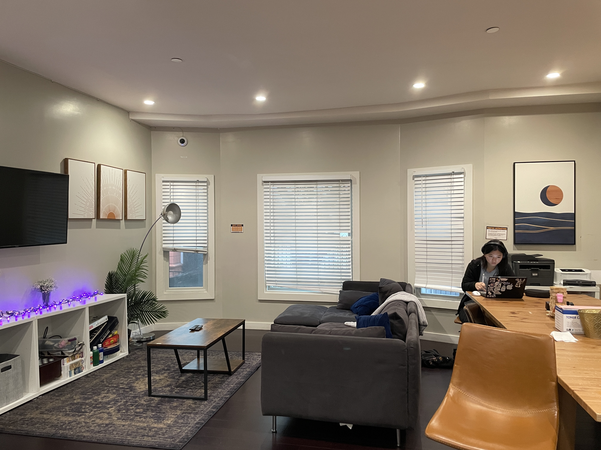 | |
|
|
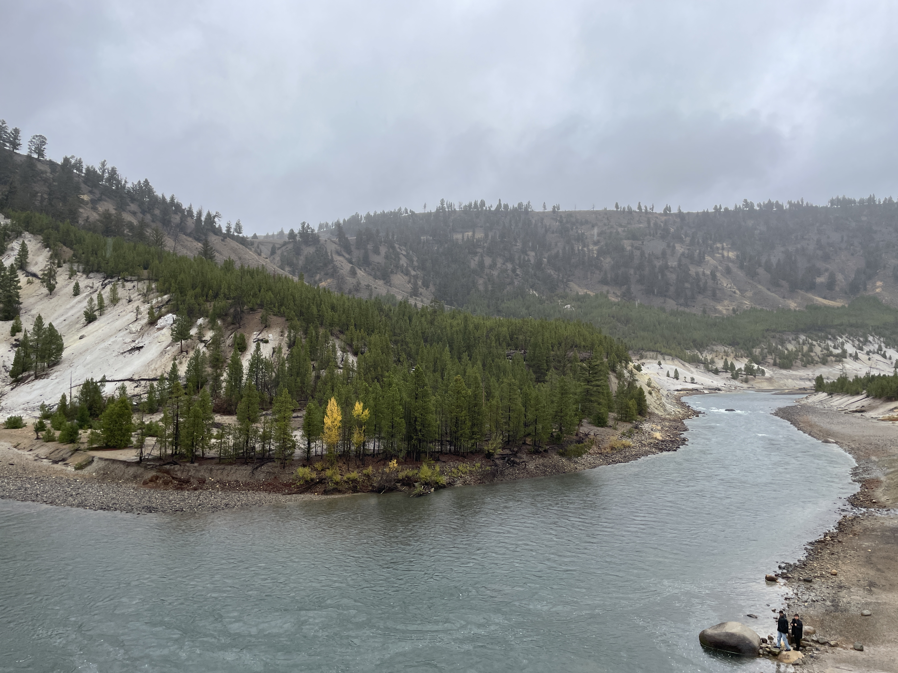 | 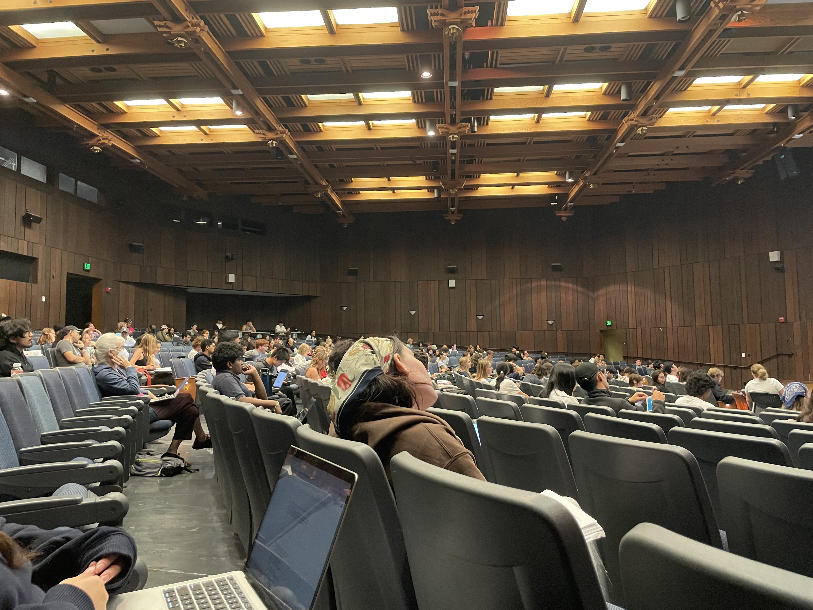 | 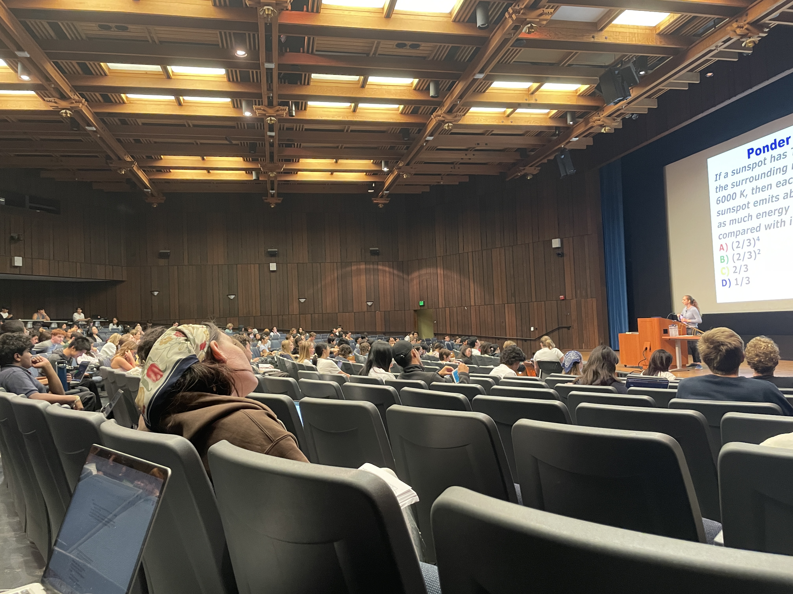 | 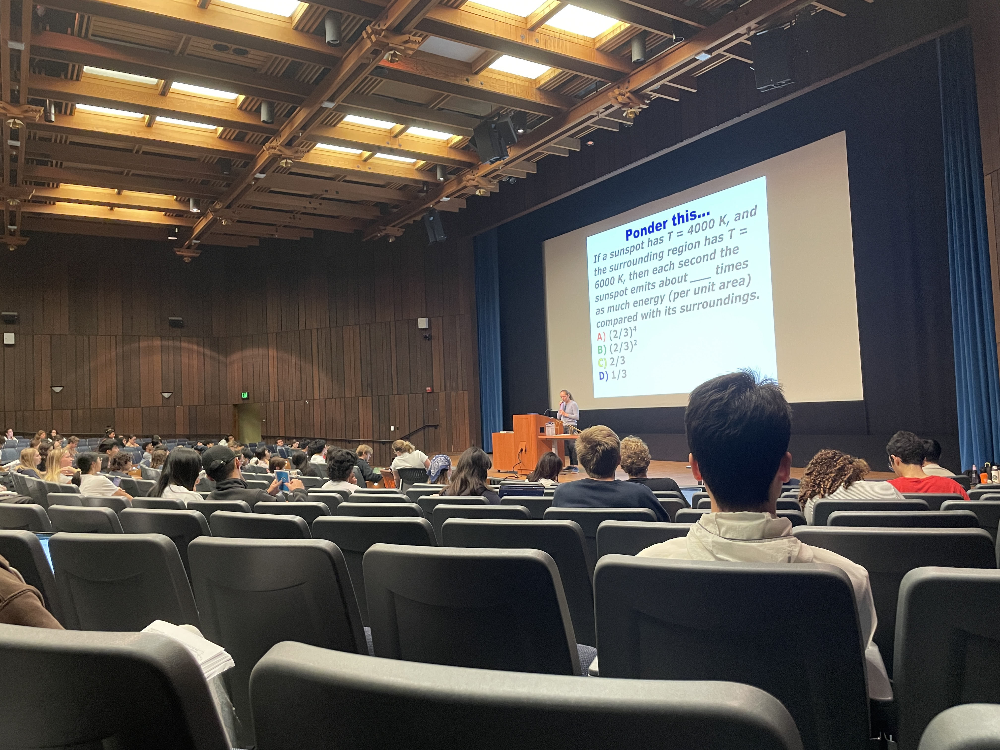 |
First, we will recover the parameters of the transformation between each pair of images. The transformation is a homography: p’=Hp,
where H is a 3x3 matrix with 8 degrees of freedom that transforms a point p in image 1 to p' in image 2.
In order to compute the entries in the matrix H, we set up a linear system using n=12 pairs of points p and p'.
These are correspondences, manually selected using matplotlib's ginput function.
Stacking n correspondences gives us a matrix equation Ah = b, where A is a 2nx8 matrix, b is a 2nx1 vector,
and h is [h11,h12,h13,h21,h22,h23,h31,h32^]T. From this matrix equation, we solve for h using least squares: h=((A^TA)^−1)(A^T)b
and convert it back to a 3x3 homography matrix H.
| 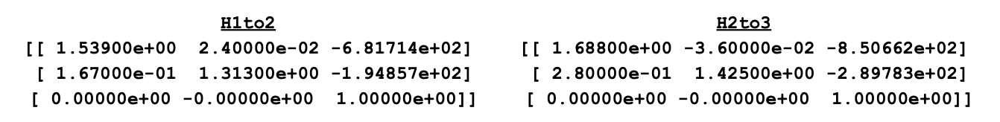 | 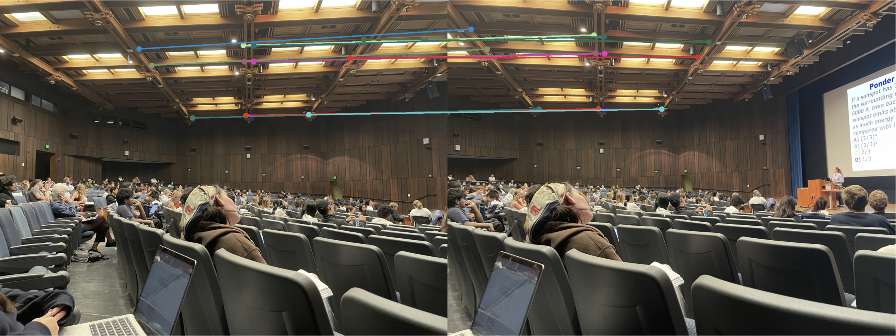 | 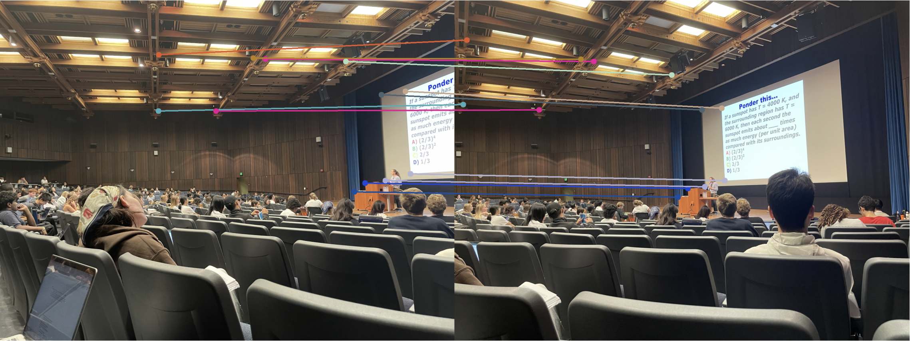 |
Now, we will implement warping using homographies. First, we predict the boundaries of the destination image by applying homography H on the 4 corners of the source image.
We then initialise the destination image grid. Next, we do inverse warping, where for each destination pixel (xd, yd), we compute the corresponding source coordinates
using (xs, ys) = H_inverse*[xd, yd, 1]^T. This avoids holes (the usual problem of forward-warp).
| 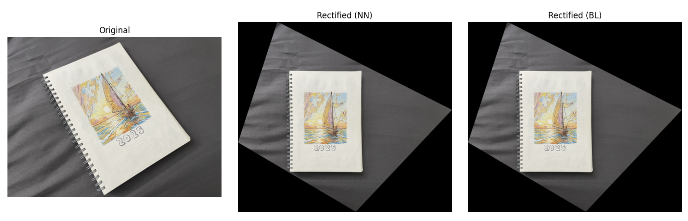 | 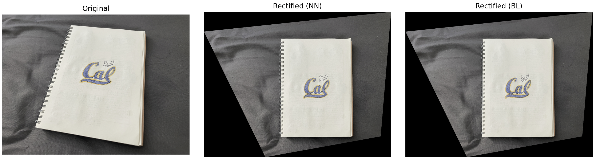 | 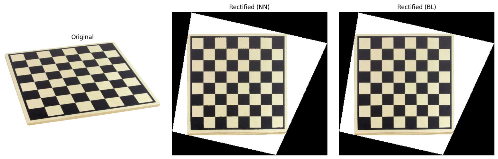 |
Nearest Neighbour (NN) VS Bilinear (BL) interpolation:
Quality wise, comparing the zoomed-in versions of NN and BL, we see that NN introduces jaggers/pixelated edges, while BL has less staircasing. This is because BL smooths and slightly blends values as it takes a weighted average of neighbouring pixels. However, in terms of speed, NN is faster as it involves just a rounding and fetch, while BN involves calculating weights, multiplication and addition on the pixel values of 4 neighbours. Overall, in the trade off between quality and speed, BN still is preferred as it still is relatively cheap and usually real-time for moderate image sizes. Visually, it also yields better results. We will use BN in our next panorama stitching stages.Finally, we will use all of the above to warp and combine 3 images create an image mosaic (panorama). The procedure is as follows:
Step 1: Compute homographies to reference frame Each adjacent image pair has manually chosen point correspondences. We compute pairwise homographies H1to2 and H2to3, each describing how to map image i to image i+1's coordinate frame. Next, we make homographies to express every image relative to image 2. We haveH1to2 = H1to2; H2to2 = np.eye(3); H3to2 = np.linalg.inv(H2to3)
Step 2: Find bounding box of final mosaic
Now we set a bounding box for our final mosaic by first seeing where all image corners land in the 2nd image's frame.
We take the 4 corners of all images and pass them through their homography Hxto2, and find the collective xmin, x mas, ymin and ymax that gives us the bounding box for all images.
The final panorama's width and height are W=⌈xmax−xmin⌉, H=⌈ymax−ymin⌉.
Then we build a small translation homography T that shifts everything by (-xmin, -ymin) so that the top left corner aligns with (0,0) to ensure all warped images fit in the canvas.
Step 3: Wrap each image onto canvas
The final homography for image x will be Hx = T @ Hxto2 . We wrap the image using bilinear interpolation im_warped, mask = warpImageBilinear(im, H_final, out_shape=(H, W)),
producing a warped image that fits in the bounding box and a binary mask indicating which pixels in the panorama are filled by the warped image (HxW).
We then convert the single-channel mask into three identical copies (H×W×3) — one per color channel.
Finally, we blend the images via weighted averaging. For each pixel, the warped image contributions are summed (num += im_warped * m3) and divided by the total number of overlapping images
(den += m3), yielding the average color value per pixel in the final mosaic.
Results below!
| 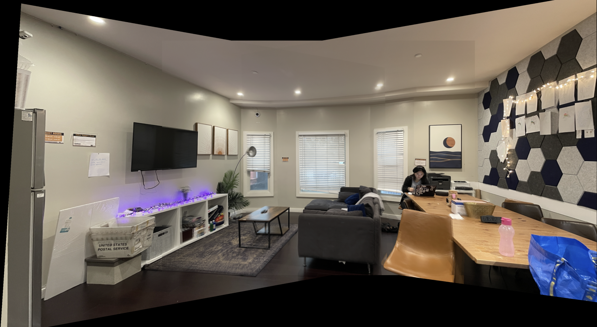 | 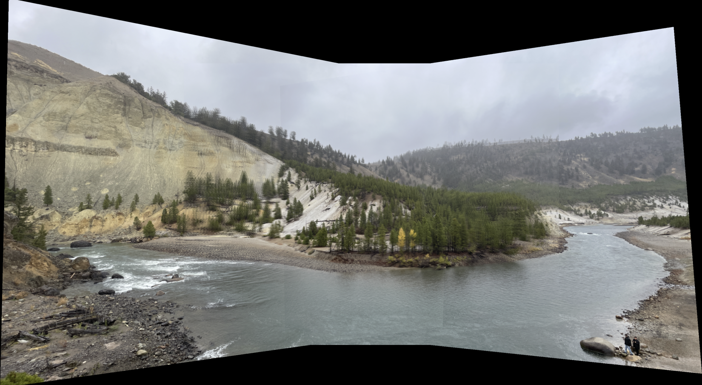 | 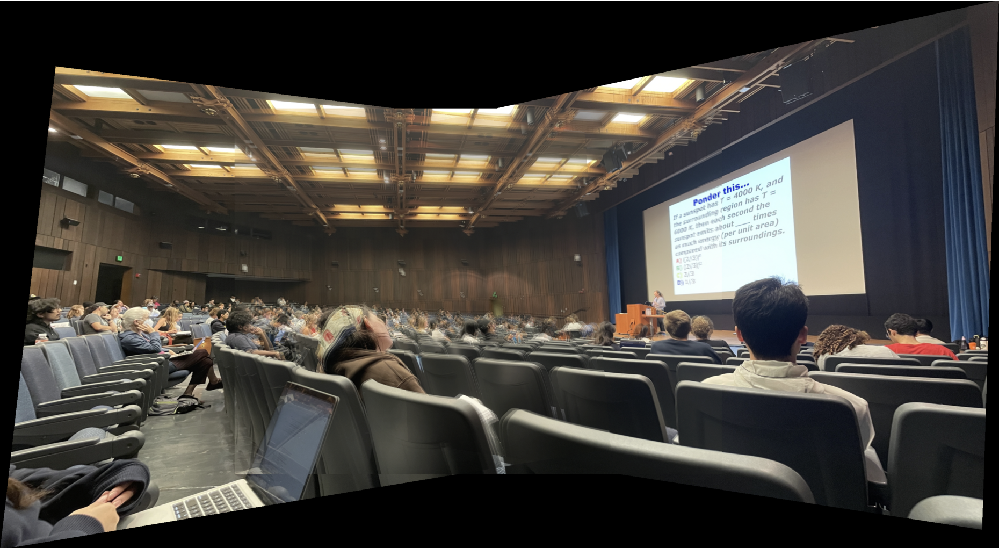 |
We observe that the final panoramas can appear slightly blurry, likely due to errors in manual selection of our point correspondences. In part 3B, we will look at how to fix this by automating feature matching across images!
In this section, we create a system for automatically stitching images into a mosaic.
First, we will implement Harris Corner Detection. We use skimage'scorner_harris to compute the Harris response map h, which assigns a corner strength value to each pixel,
indicating how likely it is to be a corner. We then find local maxima in this map using skimage's peak_local_max, ensuring that detected corners are spaced at least min_dist=10 pixels apart
and exceed a threshold=0.1 (basically, only shortlist corners with h values > h.max() * threshold). We remove points that lie within edge_discard=20 pixels of the image edges.
We return both the full Harris response map h and the coordinates of valid corners.
Next, we apply Adaptive Non-Maximal Suppression which refines these detected corners to keep only spatially well-distributed
and distinctive ones. For each corner, it finds the distance to the nearest corner that has a stronger Harris response. This distance, called the suppression radius,
indicates how isolated a corner is among stronger points. Corners with larger radii are more valuable since they represent locally unique and prominent features.
Finally, we select num_points=200 corners with the largest suppression radii, producing a set of strong, evenly spaced points suitable for robust
feature matching and image alignment.

Next, we create feature descriptors around previously detected corner points. For each corner, we sample a 40×40 window centered on the corner
to capture local image structure. In each window, we extract an 8×8 patch by sampling pixels at fixed intervals of sample_spacing=5,
which downsamples the window while retaining key texture information.
Now, we match features across 2 images together by computing the euclidean distances between all the descriptors and using the Lowe's ratio test.
Lowe's ratio = (distance for the best match)/(distance for the second best match). A high ratio means that we have a clear match with little confusion,
and we consider only matches with ratio above ratio_thresh = 0.8 as valid matches. This returns a list of all matched points between 2 images.

In this last section, we use 4-point RANSAC to compute our homography. It starts with the matched points from both images. We first randomly sample 4 matched point pairs to compute a candidate homography H. Then we project all image1 points to image2 using this H, and compute a reprojection error — the distance between the projected point and the true match point — for all matches. Matches with errors below the inlier_threshold are considered inliers, representing matches that agree with the estimated transformation.
Overn_iters=2000 iterations, the function keeps track of the candidate H with the most inliers, representing the best geometric fit.
Finally, from the best candidate H, it recomputes a final homography using all of that H's inliers. The resulting best_H matrix encodes the optimal
perspective warp aligning image 1 to image 2, while best_inliers identifies which matches were geometrically consistent under that transformation.
The below image shows the results of RANSAC (inliers = green, outliers = red). Looking at the placements of the green dots across the 2 images, we see
that they do indeed match!

With the best_H homographies computed from RANSAC, we can stitch together panoramas using the techniques in part A. Here are the results! We first show the new panoramas with auto feature matching, then the old panoramas from Part 3A (with manual matching) below for comparison. We see that for the Yellowstone and Wheeler Auditorium images that have lots of details, auto feature matching improves the clarity of the panoramas significantly.
 |
 |
 |